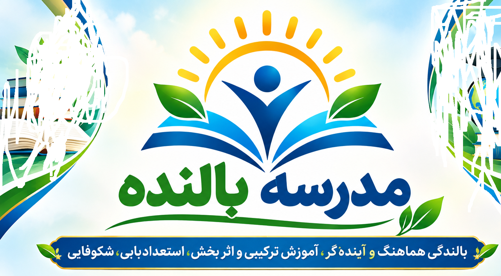

مدرسهای برای بالندگی انسان
این وبسایت با رویکردی فرهنگی، آموزشی، حرفهای و انسانمحور، مجموعه، مراکز و مدارس بالنده و تجربههای میدانی آن را معرفی میکند.
مراکز و مدارس بالنده امام رضا (ع) سبزوار
نظریه مدرسه بالنده
از نگاه متفاوت به انسان تا الگوی انسانمحور برای تحول بنیادین پرورشی؛ با تأکید بر ظرفیتهای انسان، اعتماد، فرصت رشد، گفتوگو و مسئولیتپذیری.
پنج اصل بنیادین
ده مؤلفه بالندگی
تجربههای میدانی
روایت تجربههای واقعی مدیران، معلمان، دانشآموزان و خانوادهها در مسیر بالندگی مدرسه.
مقالات و پژوهشها
مقالات، پژوهشهای مدرسه و آثار علمی مرتبط با نظریه مدرسه بالنده.
مدیر و معلم بالنده
معلم و مدیر بهعنوان دوست صمیمی، تسهیلگر، راهنما و همراه رشد انسان.
خانواده
خانواده، شریک واقعی مدرسه در مسیر رشد، یادگیری و شکوفایی فرزندان.
ارتباط با ما
مجتمع فرهنگی آموزشی امام رضا (ع) سبزوار
وبسایت: raufsch.ir